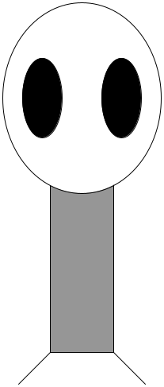
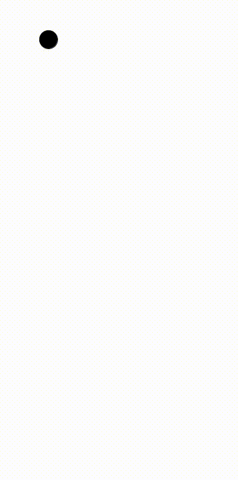
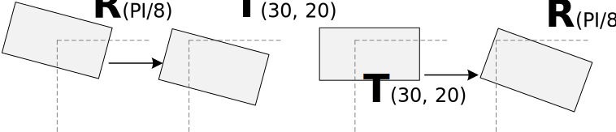

Los objetivos de esta práctica son los siguientes:
Familiarización con el ordenador y los elementos básicos de un sistema operativo.
Familiarización con el entorno de desarrollo Processing.
Familiarización con aspectos básicos de programación a través de programas en Processing.
Processing
Introducción
Processing es un lenguaje de programación y un entorno de desarrollo (Integrated Development Environment, IDE).
Basado en Java
Producción de proyectos multimedia e interactivos
Creado por científicos del MIT en 2001
Distribución gratuita y de código abierto
La propia página de Processing muestra numerosos ejemplos de proyectos realizados con este lenguaje. También hay muchos ejemplos en Youtube, en particular, en el canal de The Coding Train.
El entorno de desarrollo de Processing tiene un diseño minimalista que facilita su uso. La interfaz gráfica posee las siguientes partes:
Un menú de opciones (archivo, editar, sketch, depuración, herramientas y ayuda).
Dos botones para ejecutar y detener el programa.
Un área central para escribir el código fuente (editor).
Una ventana inferior donde se muestran dos pestañas:
Consola: Salida estándar del programa.
Errores: Mensajes de error generados durante la ejecución.
Figura 3: Vista del entorno de desarrollo y ventana pop-up que redirige a ejemplos disponibles en su página web.
Al ejecutar un programa se abrirá una nueva ventana donde se mostrará el resultado de la ejecución .
Advertencia
Cada ejercicio debe realizarse en un nuevo fichero, no en una nueva pestaña. Se recomienda guardar cada fichero a medida que se avanza en los ejercicios.
Dibujando figuras geométricas
Las figuras geométricas se dibujan en una ventana que está formada por una matriz de píxeles. Cada píxel es un pequeño punto de luz que puede tener un color diferente. La combinación de todos los píxeles forma la imagen que vemos en la pantalla.
Por ejemplo, las dos animaciones siguientes muestran la diferencia entre una resolución de pantalla alta y otra baja. En la animación de la derecha, a medida que reducimos la resolución, podemos observar los píxeles individuales que componen la imagen.
Figura 4: Animación con una resolución de pantalla alta.
Figura 5: Animación con una resolución de pantalla más baja, donde comienzan a ser visibles los píxeles.
Para dibujar cualquier figura geométrica, es necesario especificar una o varias posiciones en la ventana. Dichas posiciones se definen mediante un par de coordenadas (x, y), donde x indica la posición horizontal e y la posición vertical. En Processing, el origen de coordenadas (0,0) se encuentra en la esquina superior izquierda de la ventana, como se muestra en la figura de la derecha.
🧪 Ejercicio 1 - Sistema de coordenadas
Dibuja una línea que va desde la posición (10, 0) hasta la posición (40, 50).
line(10,0,40,50);
Figura 6: Ilustración de una matriz de píxeles, indicando las coordenadas de algunos de ellos.
📝 Ejercicio 2 — Errores comunes
Prueba a copiar el siguiente código en el editor de Processing y ejecutarlo:
Line(10,0,40,50);
💡 Solución
Processing es sensible al uso de mayúsculas y minúsculas. Por ejemplo, la función para dibujar una línea es line, no Line ni LINE.
Las palabras reservadas se muestran resaltadas en el editor, por lo que esta es una manera de ver si el nombre de una función está bien escrito. Los errores se muestran en la pestaña Errores de la ventana inferior.
🧪 Ejercicio 3 - Múltiples formas geométricas
Prueba a dibujar varias líneas en diferentes posiciones de la pantalla, utilizando la instrucción line varias veces.
Lienzo
Las figuras geométricas se dibujan sobre un lienzo de tamaño predeterminado 100x100 píxeles. No obstante, es posible cambiar el tamaño del lienzo utilizando la función size, que recibe dos parámetros: el ancho y el alto del lienzo en píxeles.
🧪 Ejercicio 4 - Tamaño del lienzo
Dibuja varias líneas en un lienzo de tamaño 300x200 píxeles.
Además de la línea utilizada en los ejercicios anteriores, Processing permite dibujar otras figuras geométricas básicas, tales como puntos, triángulos, cuadriláteros, rectángulos y elipses.
🧪 Ejercicio 5 - Deducción de parámetros
¿Puedes deducir qué parámetros son necesarios para dibujar algunas de las figuras geométricas mencionadas anteriormente? Puedes consultar la documentación oficial de Processing, y más concretamente, la sección 2d primitives en el apartado Shape.
💡 Solución
point(x, y): un punto en la posición (x, y).
triangle(x1, y1, x2, y2, x3, y3): un triángulo con vértices en las posiciones (x1, y1), (x2, y2) y (x3, y3).
quad(x1, y1, x2, y2, x3, y3, x4, y4): un cuadrilátero con vértices en las posiciones (x1, y1), (x2, y2), (x3, y3) y (x4, y4).
rect(x, y, anchura, altura): un rectángulo con esquina superior izquierda en la posición (x, y), de anchura y altura especificadas.
ellipse(x, y, anchura, altura): una elipse centrada en la posición (x, y), con anchura y altura especificadas.
Dibujando rectángulos y elipses
Tanto en la documentación oficial, como en la solución del ejercicio anterior, os habréis podido dar cuenta de que las funciones rect y ellipse requieren cuatro parámetros: dos para la posición y dos para el tamaño. Sin embargo, hemos asumido que la posición siempre corresponde a la esquina superior izquierda del rectángulo o al centro de la elipse. Esta suposición es correcta por defecto, pero es posible cambiarla utilizando las funciones rectMode y ellipseMode. Más concretamente, estas funciones permiten definir cómo se interpretan las posiciones pasadas como parámetros a las funciones rect y ellipse. Existen dos modos principales para cada una de estas funciones:
CORNER: la posición corresponde a la esquina superior izquierda del rectángulo o elipse.
CENTER: la posición corresponde al centro del rectángulo o elipse.
Figura 7: Representación de cómo se interpretan las posiciones en ambos modos para rectángulos y elipses.
Por defecto, Processing interpreta las posiciones de la siguiente manera:
rectMode(CORNER);ellipseMode(CENTER);
También es posible cambiar esta interpretación usando:
rectMode(CENTER);ellipseMode(CORNER);
🧪 Ejercicio 6 - Modo de dibujo
Intenta dibujar un círculo centrado en (20, 30) con radio 10 utilizando ambos modos. En el siguiente código tienes todas las instrucciones necesarias para completar el ejercicio:
// Modo por defectoellipseMode(CENTER);ellipse(,,,);// Modo alternativoellipseMode(CORNER);ellipse(,,,);
Color en Processing
Escala de grises
Hasta ahora, hemos dibujado figuras geométricas sin especificar ningún color. Por defecto, las figuras se dibujan en negro sobre un fondo blanco.
A continuación, veremos cómo especificar colores en Processing. Por ahora, basta con componer colores en escala de grises. Para ello hay que tener en cuenta que la escala de un tono de gris va de 0 a 255; el valor 0 corresponde al negro y el valor 255 corresponde al blanco. Por ejemplo, la figura de la derecha se ha representado única y exclusivamente con diferentes valores de gris.
En Processing, las figuras tienen borde y relleno, que se definen mediante los métodos stroke y fill. Además, también puede controlarse el color de fondo de la ventana con background.
Figura 8: Imagen representada únicamente con valores de gris.
Por ejemplo, podemos definir el color del fondo, así como del borde y el relleno de un rectángulo de la siguiente manera:
background(0);// fondo stroke(200);// bordefill(100);// rellenorect(50,50,100,100);
Además, cabe destacar que Processing funciona como una máquina de estados; es decir, una vez se indica el color de borde o de relleno, este se utilizará para todas las figuras que se dibujen a continuación. Por ejemplo, podemos dibujar dos rectángulos con el mismo color de borde, pero diferente color de relleno, de la siguiente manera:
stroke(0);fill(150);rect(20,20,50,50);// borde negro, relleno grisfill(50);rect(80,20,50,50);// mismo borde, diferente relleno
🧪 Ejercicio 7 - Círculo y colores
Dibuja un círculo negro con borde gris, centrado en (20, 30) y con radio 10.
💡 Solución
stroke(128);fill(0);ellipse(20,30,20,20);
🧪 Ejercicio 8 - Dibuja una forma geométrica
Trata de obtener algo parecido a la figura que se muestra debajo.
Colores RGB (red, green, blue)
Figura 9: Representación de los colores primarios RGB.
Además de diferentes tonos de gris, Processing permite definir colores a partir de los tres colores primarios: rojo, verde y azul (RGB). Cuando los tres componentes toman el valor máximo (255), el color resultante es el blanco. En una escala de grises, los tres valores RGB coinciden; por ejemplo, el color (0, 0, 0) corresponde al negro. Por otro lado, si sólo activamos un canal con 255, y dejamos el resto a 0, obtenemos rojo, verde o azul.
Además de los canales R, G y B, también podemos indicar un valor de opacidad. De esta manera, un valor de opacidad de 255 indica que elemento a dibujar es completamente opaco, y un valor de 0 indica que es completamente transparente. Para especificar la opacidad, bastante con indicar un cuarto valor en operaciones como stroke o fill.
Hasta este momento, hemos escrito programas estáticos, es decir, programas que dibujan una imagen fija. A continuación, veremos cómo crear programas dinámicos que pueden cambiar con el tiempo.
Comenzaremos con este bloque de código:
size(800,800);// Pinta un fondo blancobackground(255);// Fija las coordenadas basadas en el centroellipseMode(CENTER);rectMode(CENTER);// Dibuja el cuerpostroke(0);fill(150);rect(400,400,80,400);// Dibuja la cabezafill(255);ellipse(400,280,200,240);// Dibuja los ojosfill(0);ellipse(350,280,50,100);ellipse(450,280,50,100);// Dibuja las piernasstroke(0);line(360,600,320,640);line(440,600,480,640);

Figura 10: Imagen del alienígena Zoog.
🧪 Ejercicio 10 - Dibuja a Zoog
Intenta dibujar al alienígena Zoog utilizando el bloque de código anterior como referencia.
Comentarios
Aprovechando que nuestro programa empieza a ser un poco más largo, es recomendable añadir comentarios para explicar qué hace cada parte del código. En Processing, los comentarios se indican con // para comentarios de una sola línea, o con /* y */ para comentarios multilínea. Por ejemplo, en el siguiente código se han añadido comentarios para explicar qué parte del cuerpo de Zoog dibuja cada bloque de instrucciones:
// Dibuja el cuerpo de Zoogrect(200,200,40,200);/* Dibuja la cabeza de Zoog en la posición (200, 140) con ancho y alto 120 */ellipse(200,140,100,120);
Funciones setup y draw
Processing utiliza dos funciones especiales para organizar el código: setup y draw.
La función setup se ejecuta una única vez al inicio del programa, y es el lugar adecuado para inicializar variables, definir el tamaño de la ventana, etc.
Por otro lado, la función draw se ejecuta de manera repetitiva en un bucle infinito, y es el lugar adecuado para dibujar figuras que cambian con el tiempo.
Tanto setup como draw son funciones especiales que no requieren ser llamadas explícitamente en el código; Processing se encarga de ello automáticamente. Aunque no entraremos en detalles sobre la sintaxis de las funciones en este momento, es importante destacar que el código que se encuentra dentro de una función debe estar sangrado (indentado) para indicar que pertenece a dicha función. Además, ambas funciones devuelven void, lo que significa que no devuelven ningún valor. También es importante abrir y cerrar llaves {} para definir el bloque de código que pertenece a cada función.
Por ejemplo, el siguiente programa dibuja una pelota que rebota dentro de la ventana:
int x =50;int y =50;int speedX =3;int speedY =2;voidsetup(){size(400,400);}voiddraw(){background(255);// Dibuja la pelotafill(0);ellipse(x, y,30,30);// Actualiza la posición de la pelota x += speedX; y += speedY;// Rebote en los bordesif(x <=15|| x >= width -15){ speedX =-speedX;}if(y <=15|| y >= height -15){ speedY =-speedY;}}

🧪 Ejercicio 11 - Zoog, utilizando setup y draw
Reescribe el código de Zoog utilizando las funciones setup y draw. ¿Notas alguna diferencia en el resultado respecto al código original?
voiddraw(){// Pinta un fondo blancobackground(255);// Fija las coordenadas basadas en el centroellipseMode(CENTER);rectMode(CENTER);// Dibuja el cuerpostroke(0);fill(150);rect(400,400,80,400);// Dibuja la cabezafill(255);ellipse(400,280,200,240);// Dibuja los ojosfill(0);ellipse(350,280,50,100);ellipse(450,280,50,100);// Dibuja las piernasstroke(0);line(360,600,320,640);line(440,600,480,640);}voidsetup(){// Tamaño del lienzosize(800,800);}
🔴 Color de fondo
Prueba a mover la instrucción background(255); desde la función draw a la función setup. ¿Qué ocurre?
Transformaciones geométricas
Aunque no entraremos en detalles sobre las transformaciones geométricas en este momento, es importante mencionar que Processing proporciona varias funciones para trasladar, rotar y escalar las figuras geométricas. Por ejemplo, la función translate(x, y) permite trasladar el origen de coordenadas a la posición (x, y), de manera que todas las figuras que se dibujen a continuación se posicionarán en función de este nuevo origen.
Por ejemplo, los siguientes dos bloques de código dibujan un rectángulo en la misma posición, pero utilizando diferentes transformaciones geométricas:
size(150,200);// Sin transformaciones geométricasrect(50,50,50,100);// Con transformaciones geométricastranslate(50,50);rect(0,0,50,100);
Las transformaciones geométricas más comunes son:
translate(x, y): traslada el origen de coordenadas a la posición (x, y).
rotate(angle): rota el sistema de coordenadas en un ángulo especificado (en radianes).
Por ejemplo, para rotar 45 grados, se puede utilizar rotate(PI/4), ya que π radianes equivalen a 180 grados.
Dados dos puntos (x1, y1) y (x2, y2), el ángulo entre ellos puede calcularse con la función atan2(y2 - y1, x2 - x1).
scale(s): escala el sistema de coordenadas por un factor s.
Por otro lado, cuando aplicamos transformaciones geométricas, es importante tener en cuenta que estas se acumulan. Por ejemplo, si definimos en el código una traslación seguida de una rotación, todas las figuras que se dibujen a continuación se verán afectadas por ambas transformaciones; primero se aplicará la rotación y luego la traslación.
Para evitar este comportamiento acumulativo, Processing proporciona las funciones pushMatrix() y popMatrix(), que permiten guardar y restaurar el estado del sistema de coordenadas, respectivamente. De esta manera, podemos aplicar transformaciones geométricas a un bloque específico de código sin afectar al resto del programa.
Por ejemplo, el siguiente bloque de código dibuja dos rectángulos: el primero se dibuja con una traslación y una rotación, mientras que el segundo se dibuja sin ninguna transformación geométrica, gracias al uso de pushMatrix() y popMatrix().
size(400,200);pushMatrix();// Introducimos un nuevo bloque de transformacionestranslate(150,50);// Trasladamos el origenrotate(PI/4);// Rotamos 45 gradosrect(0,0,50,100);popMatrix();// Restauramos el sistema de coordenadas originalrect(300,50,50,100);// No se ve afectado por las transformaciones anteriores
A modo de ejemplo, la Figura 11 ilustra la importancia de ordenar correctamente las transformaciones geométricas. En la imagen de la izquierda, primero se traslada el origen de coordenadas y luego se rota, mientras que en la imagen de la derecha, primero se rota y luego se traslada. Como resultado, los rectángulos aparecen en posiciones diferentes.

Figura 11: A la izquierda, una rotación respecto del origen de coordenadas, seguida por una traslación; a la derecha, una traslación seguida por una rotación
Interacción con el ratón
Como habrás podido observar, en el programa de la pelota que rebota, se utilizan algunas palabras reservadas como width y height. Estas palabras reservadas permiten acceder al ancho y alto de la ventana, respectivamente. De manera similar, Processing proporciona otras palabras reservadas que permiten interactuar con el ratón, como mouseX y mouseY, que indican la posición actual del ratón en la ventana.
🧪 Ejercicio 12 - Sigue al ratón
Modifica el programa de Zoog para que la esquina superior izquierda, es decir, desde donde se dibuja el cuerpo, siga la posición del ratón, utilizando mouseX y mouseY.
💡Pista: se puede trasladar toda la geometría con una de las transformaciones geométricas antes mencionadas.
🧪 Ejercicio 13 - Reacción del cuerpo al movimiento del ratón
Modifica el programa de Zoog para que la cabeza gire en función de la posición del ratón. Por ejemplo, si el ratón está a la izquierda de Zoog, la cabeza debe girar hacia la izquierda, y viceversa.
💡Pista: se puede rotar toda la cabeza, incluyendo los ojos, con una de las transformaciones geométricas antes mencionadas. Para calcular el ángulo de rotación, puedes utilizar la función atan2(dy, dx), donde dy y dx son las diferencias en las coordenadas y y x entre la posición del ratón y la posición de la cabeza de Zoog.
Variables, condicionales y bucles
Introducción a variables
En la sección anterior hemos descubierto que el método draw se ejecuta de manera repetitiva en un bucle infinito. Esto nos permite crear programas dinámicos que cambian con el tiempo. Sin embargo, para crear programas más complejos, es necesario utilizar variables para almacenar datos que pueden cambiar durante la ejecución del programa.
🧪 Ejercicio 14 - Traslada una esfera
Crea un programa que traslade una esfera de izquierda a derecha en la ventana. Utiliza una variable para almacenar la posición horizontal de la esfera, y actualízala en cada iteración del bucle draw.
💡 Solución
// Variables globalesint circleX =100;int circleY =100;// Se ejecuta al inicio del programavoidsetup(){size(200,200);}// Se ejecuta repetidamentevoiddraw(){background(255);stroke(0);fill(175);ellipse(circleX, circleY,50,50); circleX = circleX +1;}
Condicionales
Los condicionales permiten ejecutar diferentes bloques de código en función de si se cumple o no una determinada condición. En Processing, los condicionales se implementan utilizando las palabras reservadas if, else if y else.
La sintaxis básica de un condicional es la siguiente:
if(condición){// bloque de código si la condición es verdadera}elseif(otra_condición){// bloque de código si la otra condición es verdadera}else{// bloque de código si ninguna condición es verdadera}
Ten en cuenta que no siempre es necesario utilizar else if o else; un condicional puede consistir únicamente en una instrucción if.
🧪 Ejercicio 15 - Color de fondo interactivo
Modifica el programa de Zoog para que el color de fondo cambie en función de la posición del ratón. Por ejemplo, si el ratón se encuentra en el primer tercio de la ventana, el fondo debe ser blanco; si está en el segundo tercio, el fondo debe ser gris; y si está en el tercer tercio, el fondo debe ser negro.
Bucles
Existen algunas palabras reservadas en Java para representar bucles, es decir, bloques de código que se repiten durante un número de iteraciones, o infinitamente hasta que no se cumpla alguna condición.
En esta sesión es suficiente con conocer el bucle for, que permite ejecutar un bloque de código un número determinado de veces. La sintaxis básica de un bucle for es la siguiente:
for(int i =1; i <= N; i++){// bloque de código a ejecutar N veces}
🧪 Ejercicio 16 - Múltiples Zoog
El objetivo es mostrar 2 Zoogs en la pantalla a partir del programa de un único Zoog. Ten en cuenta que tendrás que modificar la posición de al menos uno de ellos para que sea visible.
A modo de inspiración, el siguiente código dibuja dos rectángulos desplazados en el eje horizontal y vertical en función de i:
size(500,200);int N =2;for(int i =1; i <= N; i++){rect(i *150,50+ i *10,80,80);}
Apéndice: Instalación de Processing
Figura 12: Banner de la página oficial de Processing; a la izquierda se muestra el botón de Download.